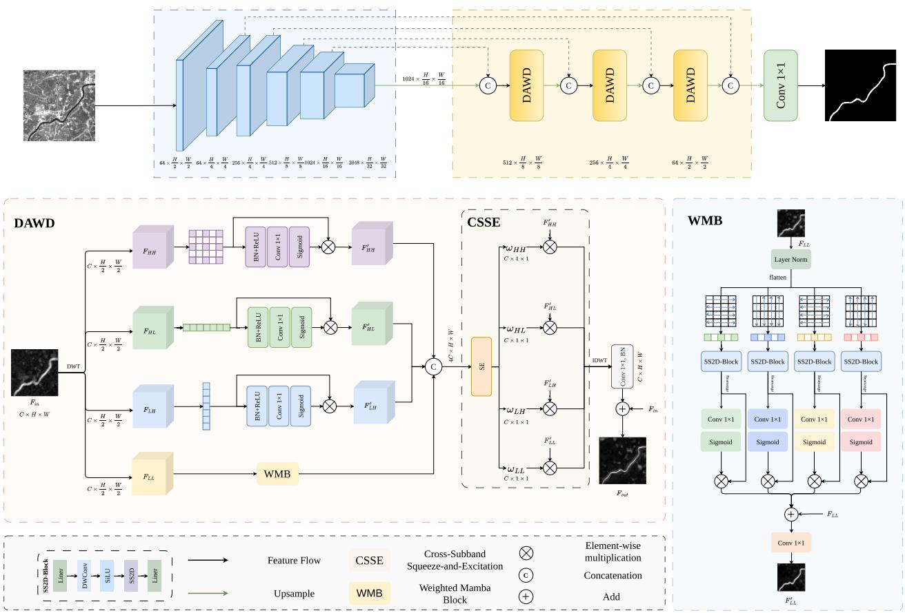

WaveMamba: A Directional Wavelet Decoder for Water Body Detection in SAR Imagery
IEEE Geoscience and Remote Sensing Letters (GRSL), 23: 1505305, 2026.
Co-first author (with my research mentor); listed second. Method design, implementation, experiments, and manuscript writing.